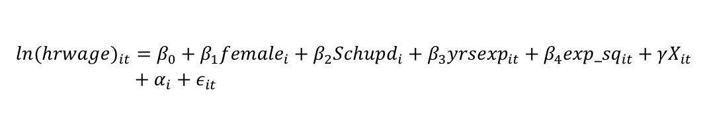
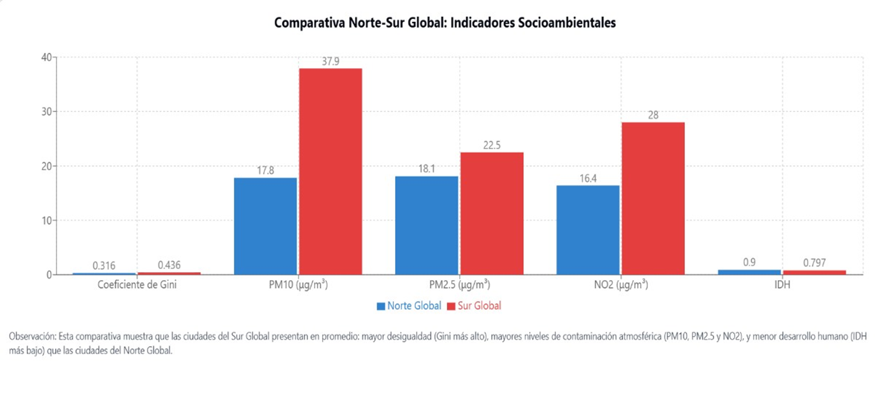

🌿 Eco‑RETINA: Green Artificial Intelligence for Housing Analytics
This research connects econometrics, machine learning, and Green AI as part of my undergraduate thesis in Economics at the Complutense University of Madrid.
Using the Eco‑RETINA algorithm, aligned with Green AI principles, I analyzed the public housing market in Singapore (2017–2022), where time is literally an economic variable.
- Surface elasticity ≈ 0.98%.
- Cubic polynomial relationship between remaining years and price.
- Positive externalities by block (~0.46 % /m²).
- Block height negatively influences annual depreciation.

📈 Gender Wage Gap in the United States
This study replicates and expands the framework by Blau and Kahn (2017), incorporating variables to capture unobserved heterogeneities. Based on PSID and CPS data (1980–2010), using an extended Mincer equation.
- 📉 Residual wage gap of 22%, even after adjusting for key variables.
- 🔠Factors: sectoral segregation, experience penalty, and regional disparities.
- 📠Hausman test (χ² = 585.96) confirms robustness.
💡 Solutions: wage audits, parental co-responsibility, and quotas in strategic sectors. Inspired by Claudia Goldin’s approach.
Based on 33,398 PSID and 344,287 CPS observations.
🌠Inequality, Human Development and Air Pollution
This study explores how economic inequality and human development influence PM10, PM2.5, and NO2 levels in cities around the world.
- Inequality: Linked to higher exposure and lower adaptive capacity.
- Development: Initially increases pollution, but later may mitigate it via better policies.
- Latitude & climate: Determine NO2 and particulate concentration differences across cities.
“Technology alone is not enough. Equity and human development are key to real sustainability.”